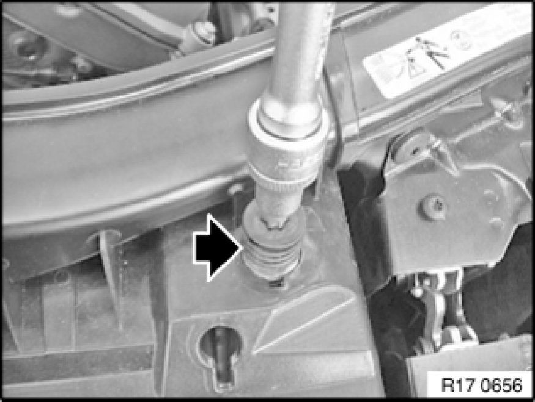
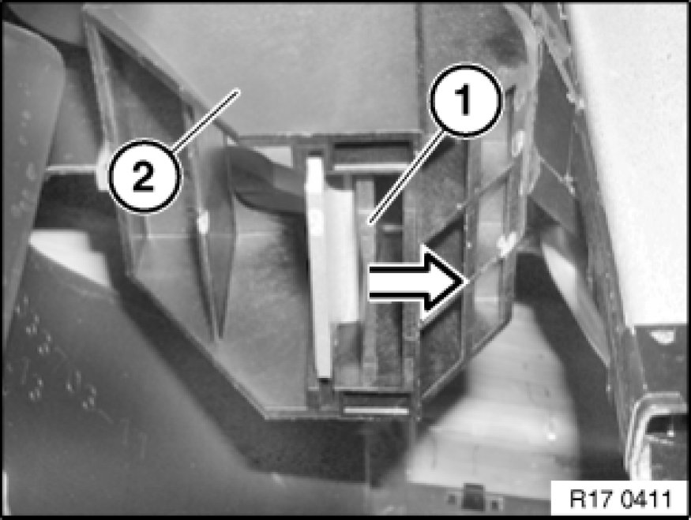
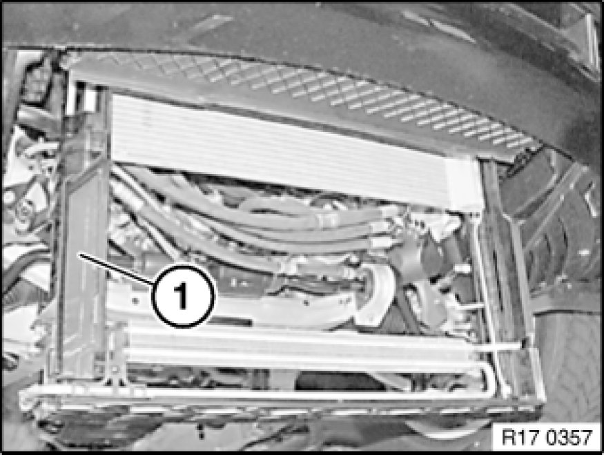

Removal and Replacement
17 11 046 - Removing and installing / replacing module carrier

Necessary preliminary tasks:
- Remove coolant cooler
- If necessary, slacken power steering cooling coil; refer to Removing power steering cooling coil Service and Repair
- If necessary, slacken A/C condenser and secure against damage and against falling down. Refer to Remove A/C condenser Service and Repair.

Release damping pieces.

Press lock (1) and remove holder (2) downwards.
Illustration shows the left holder: The same procedure applies to the opposite side.
Installation:
Rubber mounts fall out easily, ensure correct installation position.
S65 only: Engine oil cooler loose, see Removing oil cooler.

Remove module carrier (1) individually towards bottom.

When replacing module carrier:
Convert power steering cooling loop Service and Repair.